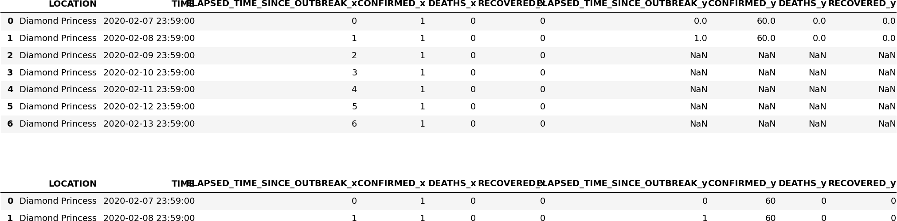

Introduction to Python
There are plenty of online resources if you want get an overview of Python syntax, here I will only mention one [1], for which the full book is available on github.
Here will try to cover both some key syntax, and some aspects of how to write (good) Python code. As you might have discovered tasks can be solved in many different ways in Python. This is clearly a strength because you would most likely be able to solve any task thrown at you. On the other hand it is a weakness, because code can get messy and hard to follow, especially if you solve the same task in different part of your code using different libraries or syntax.
In this chapter I will explain how I tend to solve some common tasks, in this process we will also cover some stuff that you should know. If you need more information on each topic below, there are plenty of online sources.
The code examples are meant as an inspiration, and maybe you do not agree and have solutions that you think are much better. If that is the case I would love to know, and I can update this chapter.
%timeit to check performance of different functions. There is also the option of using Numba, which translate python code into optimized machine code.
Personal Guidelines
It is important to have a some guidelines when coding, and for Python there are clear style guides PEP 8. Take a look at the official guidelines, and make some specific rules for yourself, and stick to them. The reason for this is that if you make a large code, people will recognize your style and it is easier to understand the code. If you are working in team, it is even more important - try to agree on some basic rules, e.g.Code Guidelines:
- Variable names should be meaningful
- Naming of variables and functions, should you write
def my_fynction(...):ordef MyFunction(..), i.e are words separated by underscore or capital letter. Personally I use capital letters for class definition, and underscore for function definitions. - (Almost) always use doc string, you would be amazed how easy it is to forget what a function does. Shorter (private) functions usually do not need comments or doc strings, if you use good variable names - it should then be easy to understand what is happening by just looking at the code.
- Inline comments should be used sparingly, only where strictly necessary.
- Strive to make code general, in particular not type specific, e.g. in Python it is easy to make functions that will work if a list (array) or a single value is passed.
- Use exception handling, in particular for larger projects.
- DRY - Do not Repeat Yourself [2]. If you need to change the code more than one place to extend it, you will forget to change everywhere and introduce bugs.
- The DRY principle also applies to knowledge sharing, it is not only about copy and paste line of code, but knowledge should only be represented in one place.
- Import libraries using the syntax
import library as .., Numpy would typically beimport numpy as np. The syntaxfrom numpy import *could lead to conflicts between modules as functions could have the same name in two different modules.
- Do not copy and paste code without understanding it. It is OK to be inspired of others, but in some cases the code example are unnecessary complicated, but perhaps more important you will get a code with a mix of different styles.
- Stick to a limited number of libraries, I try to do as much as possible with Numpy, Pandas, and Matplotlib.
- Unexpected behavior of functions, functions should be able to discover if something are wrong with arguments, and give warnings.
Code editor
You would like to use an editor that gives you some help. It is particularly useful when you do not remember a variable or function name, you can guess at the name and a drop down list will appear which will let you pick the name or function you want. If you enter a function name, the editor will write some useful information about the function, some screenshots are shown in figure 1.
Figure 1: A screenshot of vscode (left) the editor helps to identify which variable name you mean, (right) the editor show relevant of the function you would like to call.

Currently my favorite editor is vscode, it can be used for any language, and there are a lot of add ins that can be installed to make the coding experience more pleasant. Spyder is also a very good alternative, but this editor is mainly for Python. It takes some time to learn how an editor work, so it is good if it can be used for multiple purposes. However, always be open to new ideas and products, it will only make you more efficient. As an example, in some cases you will have a particular difficult error in the code, and then it could help to open and run that code in a different editor, you might get a slightly different error messages, which could help you locate the error.
Types in Python
In Python you do not need to define types as in a compiled language. In many ways one can say that Python only has one type. To not define types is generally and advantage as it lets you write code with fewer lines, and it is easier to write functions that will work with any kind of type. As an example in the programming language C, if you want to write a function that lets you add two numbers, you have to write one version if the arguments are integers and one version if the arguments are floats.
The way that Python store and organize data is called a data model, and it is very well described in the official documentation. The important point is that all data in Python is an object or a relation between objects. The is operator can be used to check if two objects have the same identity, that means they are the same object. The id operator gives an unique integer value for the object and if two objects has the same number they are the same object, e.g.
x=10
x=y
x is y # gives true
print(id(x))
print(id(y)) # prints the same integer as id(x)
For those familiar with C or C++, one would first have to define x and y as the type int and then they would already have a different place in memory and they can never be the same (even if they can contain the same number). We will return to this point in more details when we discuss lists and arrays in Python, as it can lead to unexpected behavior.
Another thing you might have experienced during Python coding is that you get error messages that refer to pieces of code that you have no knowledge of. This can happen when you pass in the wrong type (e.g. a string instead of a number). Since Python only has one type, the wrong type will not be discovered before it is actually used. This place could be deep into some other library that you have no knowledge of.
Basic types
I will assume that you are familiar with the common types like floats (for real numbers), strings (text, lines, word, a character), integer (whole numbers), Boolean (True, False). What is sometimes useful is to be able to test what kind of type a variable is, this can be done withtype()
my_float = 2.0
my_int = 3
my_bool = True
print(type(my_float))
print(type(my_int))
print(type(my_bool))
The output of the code above will be float, int, bool. If you want to test the value of a variable you can do
if isinstance(my_int,int):
print('My variable is integer')
else:
print('My variable is not integer')
Python also has build in support for complex number, they are written 1+2j, j is used as the complex number. Note there is no multiplication sign between the number 2 and j.
Lists
Lists are extremely useful, and they have some very nice syntax that in my mind is more elegant than Numpy arrays. Whenever you want to do more than one thing with only a slight change between the elements, you should think of lists. Lists are defined using the square bracket [] symbols
my_list = [] # an empty list
my_list = []*10 # still an empty list ...
my_list = [0]*10 # a list with 10 zeros
my_list = ['one', 'two','three'] # a list of strings
my_list = ['one']*10 # a list with 10 equal string elements
my_list[0]. In a list with 10 elements the last element would be my_list[9], the length of a list can be found by using the len() function, i.e. len(my_list)=10. Thus, the last element can also be found by doing my_list[len(my_list)-1]. However, in Python you can always get the last element by doing my_list[-1], the second last element would be my_list[-2] and so on.
my_list = [i for i in range(10)] # a list from 0,1,..,9
my_list = [i**3 for i in range(10)] # a list with elements 0,1,8, ..,729
We will cover for loop below, but basically what is done is that the statement i in range(10), gives i the value 0, 1, \( \ldots \), 9 and the first i inside the list tells python to use that value as the element in the list. Using this syntax, there are plenty of opportunities to initialize. Maybe you want to pick from a list words that contain a particular subset of characters
my_list = ['hammer', 'nail','saw','lipstick','shirt']
new_list = [i for i in my_list if 'a' in i]
Now new_list=['hammer', 'nail', 'saw'].
List arithmetic
I showed you some examples above, where we used multiplication to create a list with equal copies of a single element, you can also join two lists by using addition
my_list = ['hammer','saw']
my_list2 = ['screw','nail','glue']
new_list = my_list + my_list2
Now new_list=['hammer', 'saw', 'screw', 'nail', 'glue'], we can also multiply the list with an integer and get a larger list with several copies of the original list.
List slicing
Clearly we can access elements in a list by using the index to the element, i.e. first element ismy_list[0], and the last element is my_list[-1]. Python also has very nice syntax to pick out a subset of a list. The syntax is my_list[start:stop:step], the step makes it possible to skip elements
my_list=['hammer', 'saw', 'screw', 'nail', 'glue']
my_list[:] # ['hammer', 'saw', 'screw', 'nail', 'glue']
my_list[1:] # ['saw', 'screw', 'nail', 'glue']
my_list[:-1] # ['hammer', 'saw', 'screw', 'nail']
my_list[1:-1] # ['saw', 'screw', 'nail']
my_list[1:-1:2] # ['saw','nail']
my_list[::1] # ['hammer', 'saw', 'screw', 'nail', 'glue']
my_list[::2] # ['hammer', 'screw', 'glue']
Sometimes you have lists of lists, if you want to get e.g. the first element of each list you cannot access those elements using list slicing, you have to use a for loop or list comprehension
my_list = ['hammer','saw']
my_list2 = ['screw','nail','glue']
new_list=[my_list,my_list2]
# extract the first element of each list
new_list2 = [ list[0] for list in new_list]
new_list2=['hammer','screw']
[1,2]+[1,1], will give you [1,2,1,1], whereas adding two Numpy arrays will give you [2,3].
Numpy arrays
Numpy arrays are awesome, and should be your preferred choice when doing numerical operations. We import Numpy asimport numpy as np, some examples of initialization
my_array=np.array([0,1,2,3]) # initialized from list
my_array=np.zeros(10) # array with 10 elements equal to zero
my_array=np.ones(10) # array with 10 elements equal to one
A typical use of Numpy arrays is when you want to create equal spaced numbers to evaluate a function, this can be done in (at least) two ways
my_array=np.arange(0,1,0.2) # [0, 0.2, 0.4, 0.6, 0.8]
my_array=np.linspace(0,1,5) # [0., 0.25, 0.5, 0.75, 1.]
Note that in the last case, the edges of the domain (0,1) are included, and is probably the outcome you want in most cases.
np.array(my_list).
Array slicing
As with lists you can access elements in Numpy arrays in the same way as lists, the syntax ismy_array[start,stop,step]
my_array=np.arange(0,6,1)
my_array[:] # [0,1,2,3,4,5]
my_array[1:] # [1,2,3,4,5]
my_array[:-1] # [0,1,2,3,4]
my_array[1:-1] # [1,2,3,4]
my_array[1:-1:2] # [1,3]
my_array[::2] # [0,2,4]
However, as opposed to lists all the basic mathematical operations addition, subtraction, multiplication are meaningful (if the arrays have equal length, or shape)
my_array = np.array([0,1,2])
my_array2 = np.array([3,4,5])
my_array+my_array2 # [3,5,7]
my_array*my_array2 # [0,4,10]
my_array/my_array2 # [0,.25,.4]
Note that the operations does what you would expect them to do. If we have arrays of arrays, we can easily access elements in the arrays
my_array = np.array([[0,1,2],[3,4,5]])
my_array[0,:] # [0,1,2]
my_array[1,:] # [3,4,5]
my_array[:,0] # [0,3]
my_array[:,1] # [1,4]
Not the extra [] in the definition of my_array. Numpy arrays have a shape property, which makes it very easy to create different matrices. The array [0,1,2,3,4,5] has shape (6,), but we can change the shape to create e.g. a \( 2\times3 \) matrix
my_array = np.array([0,1,2,3,4,5])
my_array.shape = (2,3) # [[0,1,2],[3,4,5]]
my_array.shape = (3,2) # [[0,1],[2,3],[4,5]]
Dictionaries
If you have not used dictionaries before they might feel unnecessary, but if you get used to them and the syntax, they can make your code much more flexible and easier to expand. You should use dictionaries, when you have data that you want to access data sets fast. A very good mental image to have is an excel sheet where data are organized in columns. Each column has a header name, or a key. Assume we have the following table
| A | B | C |
| 1.0 | 2.0 | 3.0 |
| 4.0 | 5.0 | |
| 6.0 | 7.0 |
This could be represented as a dictionary as
my_dict={'A':[1.0,4.0,6.0],'B':[2.0,5.0,7.0],'C':[3.0]}
The syntax is {key1:values, key2:values2, ...}. We access the values in the dictionary by the key i.e. print(my_dict['A']) would print [1.0,4.0,6.0]. If you want to print out all the elements in a dictionary, you can use a for loop (see next section for more details)
for key in my_dict:
print(key, my_dict[key])
Looping
There are basically two ways of iterating through lists or to do a series of computations, using a for-loop or a while-loop. During a numerical computation we typically iterate through time, from time zero to the end time to calculate e.g. the position of an object.For loops
A typical example of a for loop is to loop over a list and do something, and maybe during the execution we would like to store the results in a list
numbers=['one','two','three','one','two']
result=[] # has to be declared as empty
for number in numbers:
if number == 'one':
result.append(1)
After executing this code result=[1, 1]. The number variable changes during the iteration, and takes the value of each element in the list. Note that I use numbers for the list and number as the iterator, this makes it quite easy to read and understand the code. In many cases you want to have the index, not only the element in the list
numbers = ['one','two','three','one','two']
numerics = [ 1 , 2 , 3 , 1 , 2 ]
result=[] # has to be declared as empty
for idx,number in enumerate(numbers):
if number == 'one':
result.append(numerics[idx])
After executing this code result=[1, 1]. In this case the function enumerate(numbers) returns two values: the index, which is stored in idx, and the value of the list element, which is stored in number.
A more elegant way to achieve the same results without using the enumerate() function is to use zip
numbers = ['one','two','three','one','two']
numerics = [ 1 , 2 , 3 , 1 , 2 ]
result=[] # has to be declared as empty
for numeric,number in zip(numerics,numbers):
if number == 'one':
result.append(numeric)
The zip function can also be used with several lists of same length.
In many cases you might be in a situation that you want to plot more than one function in a plot. It is then very tempting to copy and paste the previous code, but it is more elegant to use a for loop and lists
import numpy as np
import matplotlib.pyplot as plt
x_val = np.linspace(0,1,100) # 100 equal spaced points from 0 to 1
y_vals = [x_val,x_val*x_val]
labels = [r'x', r'$x^2$']
cols = ['r','g']
points = ['-*','-^']
for y_val,point,col,label in zip(y_vals,points,cols,labels):
plt.plot(x_val,y_val,point,c=col,label=label)
plt.grid()
plt.legend()
plt.show()
While loops
In most cases a for loop can also be written as a while loops and vice versa. In python you would prefer to use a for loop whenever you are iterating over a fixed number of elements. This makes the code easy to read. In cases where we are waiting for input or time is involved it may make more sense to use a while loop. Typically you would use a while loop when you do not know at the start when to stop iterating. The syntax of the while loop is to do something while a condition is true
import numpy as np
finished = False
sum =0
while not finished:
sum += np.random.random() #returns a random number between 0,1
if sum >= 10.:
finished = True
In some cases we are iterating from \( t_0 \), \( t_1 \), etc. to a final time \( t_f \), if we use a fixed time step, \( \Delta t \), we can calculate the number of steps at the beginning i.e \( N= \text{int} ((t_f-t_0)/\Delta t) \), and use a for loop. On the other hand, in the more fancy algorithm we change the time step as the simulation proceeds and then we would choose a while loop, e.g. while t0 <= tf:.
Functions in Python
When to use functions? There is no particular rule, but whenever you start to copy and paste code from one place to another, you should consider to use a function. Functions makes the code easier to read. It is not easy to identify which part of a program is a good candidate for a function, it requires skill and experience. Most likely you will end up changing the function definitions as your program develops.
Defining a mathematical function
Throughout this course you will write many functions that does mathematical operations. In many cases you would also pass a function to another function to make your code more modular. Lets say we want to calculate the derivative of \( \sin x \), using the most basic definition of a derivative \( f^\prime(x) = f(x+\Delta x)-f(x)/\Delta x \), we could do it as
def derivative_of_sine(x,delta_x):
''' returns the derivative of sin x '''
return (np.sin(x+delta_x)-np.sin(x))/delta_x
print('The derivative of sinx at x=0 is :', derivative_of_sine(0,1e-3))
We will return in a later chapter why \( \Delta x=10^{-3} \) is a reasonable choice. If we would like to calculate the derivative in multiple points, that is straight forward since we have used the Numpy version of \( \sin x \).
x=np.array([0,.5,1])
print('The derivative of sinx at x=0,0.5,1 is :', derivative_of_sine(x,1e-3))
The challenge with our implementation is that if we want to calculate the derivative of another function we have to implement the derivative rule again for that function. It is better to have a separate function that calculates the derivative
def f(x):
return np.sin(x)
def df(x,f,delta_x=1e-3):
''' returns the derivative of f '''
return (f(x+delta_x)-f(x))/delta_x
print('The derivative of sinx at x=0 is :', df(0,f))
Note also that we have put delta_x=1e-3 as a default argument. Default arguments have to come at the end of the argument lists, df(x,delta_x=1e-3,f) is not allowed. All of this looks well and good, but what you would experience is that your functions would not be as simple as \( \sin x \). In many cases your functions need additional arguments to be evaluated e.g.:
def s(t,s0,v0,a):
'''
s0 : initial starting point
v0 : initial velocity
a : acceleration
returns the distance traveled
'''
return s0+v0*t+a*t*t*0.5 #multiplication (0.5)is general faster
#then division (2)
How can we calculate the derivative of this function? If we try to do df(1,s) we will get the following message
TypeError: s() missing 3 required positional
arguments: 's0', 'v0', and 'a'
This happens because the df function expect that the function we send into the argument list has a call signature f(x). What many people do is that they use global variable, that is to define s0, v0, a at the top of the code. This is not always the best solution. Python has a special variable *args which can be used to pass multiple arguments to your function, thus if we rewrite df like this
def f(x,*args):
return np.sin(x)
def df(x,f,*args,delta_x=1e-3):
''' returns the derivative of f '''
return (f(x+delta_x,*args)-f(x,*args))/delta_x
we can do (assuming s0=0, v0=1, and a=9.8)
print('The derivative of sinx at x=0 is :', df(0,f))
print('The derivative of s(t) at t=1 is :', df(0,s,0,1,9.8))
Scope of variables
In small programs you would not care about scope, but once you have several functions, you will easily get into trouble if you do not consider the scope of a variable. By scope of a variable we mean where it is available, first some simple examplesA variable created inside a function is only available within the function:
def f(x):
a=10
b=20
return a*x+b
Doing print(a) outside the function would create an error: name 'a' is not defined. What happens if we defined a variable a outside the function
a=2
def f(x):
a=10
b=20
return a*x+b
If we first call the function f(0), and then do print(a) Python would give the answer 2, not 10. A local variable a is created inside f(x), that does not interfere with the variable a defined outside the function.
The global keyword can be used to pass and access variables in functions:
global a
a=2
def f(x):
global a
a=10
b=20
return a*x+b
In this case print(a) before calling f(x) would give the answer 2 and after calling f(x) would give 10.
global a_. A person reading the code would then know that all variables ending with an underscore are global, and can potentially be modified by many functions.
Passing arrays and lists to functions
In the previous section we looked at some simple examples regarding scope of variables, and what happened with that variable inside and outside a function. The examples used integer or floats, however in most applications you will pass an array or a list to a function, and then you need to be aware that the behavior is not always would you might expect.
x=3
def f(x):
x = x*2
return x
print('x =',x)
print('f(x) returns ', f(x))
print('x is now ', x)
In the example above we can use x=3, x=[3], x=np.array([3]), and after execution x is unchanged (i.e. same value as before f(x)) was called. Based on what we have discussed before, this is maybe what you would expect, but if we now do
x=[3]
def append_to_list(x):
return x.append(1)
print('x = ',x)
print('append_to_list(x) returns ', append_to_list(x))
print('x is now ', x)
Clearly this function will only work for lists, due to the append command, after execution, we get the result
x = [3]
append_to_list(x) returns [3, 1]
x is now [3, 1]
Even if this might be exactly what you wanted your function to do, why does x change here when it is a list and not in the previous case when it is a float? Before we explain this behavior let us rewrite the function to work with Numpy arrays
x=np.array([3])
def append_to_np(x):
return np.append(x,1)
print('x = ',x)
print('append_to_np(x) returns ', append_to_np(x))
print('x is now ', x)
The output of this code is
x = [3]
append_to_np(x) returns [3 1]
x is now [3]
This time x was not changed, what is happening here? It is important to understand what is going on because it deals with how Python handles variables in the memory. If x contains million of values, it can slow down your program, if we do
N=1000000
x=[3]*N
%timeit append_to_list(x)
x=np.array([3]*N)
%timeit append_to_np(x)
On my computer I found that append_to_list used 76 nano seconds, and append_
to_np used 512 micro seconds, the Numpy function was about 6000 times slower! To add to the confusion consider the following functions
x=np.array([3])
def add_to_np(x):
x=x+3
return x
def add_to_np2(x):
x+=3
return x
print('x = ',x)
print('add_to_np(x) returns ', add_to_np(x))
print('x is now ', x)
print('x = ',x)
print('add_to_np2(x) returns ', add_to_np2(x))
print('x is now ', x)
The output is
x = [3]
add_to_np(x) returns [6]
x is now [3]
x = [3]
add_to_np2(x) returns [6]
x is now [6]
In both cases the function returns what you expect, but it has an unexpected (or at least a different) behavior regarding the variable x. What about speed?
N=10000000
x=np.array([3]*N)
%timeit add_to_np(x)
x=np.array([3]*N)
%timeit add_to_np2(x)
add_to_np is about twice as slow as add_to_np2. In the next section we will try to explain the difference in behavior.
Call by value or call by reference
For anyone that has programmed in C or C++ call by reference or value is something one need to think about constantly. When we pass a variable to a function there are two choices, should we pass a copy of the variable or should we pass information about where the variable is stored in memory?Floats and integers
To gain a deeper understanding we can use theid function, the id function gives the unique id to a variable, in C this would be the actual memory address, lets look at a couple of examples
a=10.0
print(id(a)) #gives on my computer 140587667748656
a += 1
print(id(a)) #gives on my computer 140587667748400
Thus, after adding 1 to a, a is assigned a new place in memory. This is very different from C or C++, in C or C++ the variable, once it is created, always has the same memory address. In Python this is not the case, it is works in the opposite way. The statement a=10.0, is executed so that first 10.0 is created in memory *then x is assigned the reference to 10.0 `x`*. The assignment operator = indicates that a should point to whatever is on the right hand side. Another example is
a=10.0
b=10.0
print(a is b) # prints False
b=a
print(a is b ) # prints True
In this case 10.0 is created in two different places in the memory and a different reference is assigned to a and b. However if we put b=a, b points to the same object as a is pointing on. More examples
a=10
b=a
print(a is b) # True
a+=2
print(a is b) # False
When we add 2 to a, we actually add 2 to the value of 10, the number 12 is assigned a new place in memory and a will be assigned that object, whereas b would still points the old object 10.
Lists and arrays
Yous should think of lists and arrays as containers (or a box). If we do
x=[0,1,2,3,4]
print(id(x))
x[0]=10
print(id(x)) # same id value as before and x=[10,1,2,3,4]
First, we create a list, which is basically a box with the numbers 0, 1, 2, 3, 4. The variable x points to the box, and x[0] points to 0, and x[1] to 1 etc. Thus if we do x[0]=10, that would be the same as picking 0 out of the box and replacing it with 10, but the box stays the same. Thus when we do print(x), we print the content of the box. If we do
x=[0,1,2,3,4]
y=x
print(x is y) # True
x.append(10) # x is now [0,1,2,3,4,10]
print(y) # y=[0,1,2,3,4,10]
print(x is y) # True
What happens here is that we create a box with the numbers 0, 1, 2, 3, 4, x is referenced that box. Next, we do y=x so that y is referenced the same box as x. Then, we add the number 10 to that box, and x and y still points to the same box.
Numpy arrays behave differently, and that is basically because if we want to add a number to a Numpy array we have to do x=np.array(x,10). Because of the assignment operator = , we take the content of the original box add 10 and put it into a new box
x=np.array([0,1,2,3,4])
y=x
print(x is y) # True
x=np.append(x,10) # x is now [0,1,2,3,4,10]
print(y) # y=[0,1,2,3,4]
print(x is y) # False
The reason for this behavior is that the elements in Numpy arrays (contrary to lists) have to be continuous in the memory, and the only way to achieve this is to create a new box that is large enough to also contain the new number. This also explains that if you use the np.append(x,some_value) inside a function where x is large it could slow down your code, because the program has to delete x and create a new very large box each time it would want to add a new element. A better way to do it is to create x large enough in the beginning, and then just assign values x[i]=a.
Mutable and immutable objects
What we have explained in the previous section is related to what is known as mutable and immutable objects. These terms are used to describe objects that has an internal state that can be changed (mutable) and objects that has an internal state that cannot be changed after they have been created. Example of mutable objects are lists, dictionaries, and arrays, examples of immutable objects are floats, ints, tuples, and strings. Thus if we create the number 10 its value cannot be changed (and why would we do that?). Note that that is not the same as saying thatx=10 and that the internal state of x cannot change, this is not true. We are allowed to make x reference another object. If we do x=10, then x is 10 will give true and the will have the same value if we use the id operator on x and 10. If we later say that a=11 then a is 10 will give false and id(a) and id(10) give different values, but *`id(10)` will have the same value as before*.
Lists are mutable objects, and once a list is created we can change the content without changing the reference to that object. That is why the operations x=[] and x.append(1), does not change the id of x, and also explain that if we put y=x, y would change if x is changed. Contrary to immutable objects if x=[], and y=[] then x is y will give false. Thus, whenever you create a list it will be an unique object.
x = [1, 2, 3]
x_old[:] = x[:] # x_old = [1, 2, 3]
x[0] = 10
print(x_old) # "expected" x_old = [10, 2, 3], actual [1, 2, 3]
Comment: We put the content of the x container into x_old, but x and x_old reference different containers.
def add_to_list(x,add_to=[])
add_to.append(x)
print(add_to_list(1)) # "expected" [1] actual [1]
print(add_to_list(2)) # "expected" [2] actual [1, 2]
print(add_to_list(3)) # "expected" [3] actual [1, 2, 3]
Comment: add_to=[] is a default argument and it is created once when the program starts and not each time the function is called.
x = [10]
y = x
y = y + [1]
print(x, y) # prints [10] [10, 1]
x = [10]
y = x
y += [1]
print(x, y) # prints [10, 1] [10, 1]
Comment: In the first case y + [1] creates a new object and the assignment operator = assign y to that object, thus x stays the same. In the second case the += adds [1] to the y container without changing the container, and thus x also changes.
Exercise 1.1: Explain why only one of the codes below gives the correct answer
def power(x,n):
'''
calculates the power of x up to order n
'''
if n==0:
return np.ones(len(x))
else:
xn=x
for _ in range(n):
xn*=x
return xn
def power2(x,n):
'''
calculates the power of x up to order n
'''
if n==0:
return np.ones(len(x))
else:
xn=x
for _ in range(n):
xn = xn*x
return xn
x=np.linspace(0,1,10)
plt.plot(x,power(x,2),':',label='power')
plt.plot(x,power2(x,2), '*',label='power2')
plt.plot(x,x*x,'-',label='True answer')
plt.legend()
plt.grid()
text...
Filename: solution.pdf.
Introduction to Pandas
What is Pandas?
Pandas is a Python package that among many things are used to handle data, and perform operations on groups of data. It is built on top of Numpy, which makes it easy to perform vectorized operations. Pandas is written by Wes McKinney, and one of it objectives is according to the official website '' providing fast, flexible, and expressive data structures designed to make working with ''relational'' or ''labeled'' data both easy and intuitive. It aims to be the fundamental high-level building block for doing practical, real-world data analysis in Python''. Pandas also has excellent functions for reading and writing excel and csv files. An excel file is read directly into memory in what is called aDataFrame in Pandas. A DataFrame is a two dimensional object where data are typically stored in column or row format. Pandas has a lot of functions that can be used to calculate statistical properties of the data frame as a whole. In this chapter we will focus on basic data manipulation, stuff you might do in excel, but can be done much faster in Python and Pandas.
Creating a data frame
In the following we will assume that you have imported pandas, like this
import pandas as pd
From empty DataFrame
This is perhaps the most basic way of creating a DataFrame, first we create an empty DataFrame
df = pd.DataFrame()
df as a variable name for a DataFrame, this is a choice, but it is a usually a good choice as someone else reading the code could infer from a name that df is a DataFrame. If you need more than one DataFrame variable you could use df1, df2, etc. or even better to use a descriptive name, df_sales_data.
df=pd.DataFrame()
df['ints']=[0,1,2,3]
df['floats']=[4.,5.,6.,7.]
df['tools']=['hammer','saw','rock','nail']
print(df) # to view data frame
Note that all columns needs to have the same size.
pd.Series().
Even if we initialize the DataFrame column with a list, the command type(df['a']) will tell you that the column in the DataFrame are of type pd.Series(). Thus the fundamental objects in Pandas are of type Series. Series are more flexible, and it is possible to calculate df['a']/df['b'], whereas [0,1,2,3]/[4,5,6,7] is not possible.
Create DataFrame from dictionary
A DataFrame can be quite easily be generated from a dictionary. A dictionary is a special data structure, where an unique key is associated with a data type (key:value pair). In this case, the key would be the title of the column, and the value would be the data in the columns.
my_dict={'ints':[0,1,2,3], 'floats':[4.,5.,6.,7.],
'tools':['hammer','saw','rock','nail']
}
df=pd.DataFrame(my_dict)
print(df) # to view
From file
Assume you have some data organized in excel or in a csv file. The csv file could just be a file with column data, they could be separated by a comma or tab
Figure 2: Official Covid-19 data, and example of files (left) tab separated (right) excel file.

df=pd.read_excel('../data/corona_data.xlsx') # excel file
df2=pd.read_csv('../data/corona_data.dat',sep='\t') # csv tab separated file
If the excel file has several sheets, you can give the sheet name directly, e.g. df=pd.read_excel('file.xlsx',sheet_name="Sheet1"), for more information see the documentation.
import os
print(os.getcwd()) # prints current working directory
We can easily save the data frame to excel format and open it in excel
df.to_excel('covid19.xlsx', index=False) # what happens if you put index=True?
df.index, and it is also possible to define another column as index column.
Accessing data in DataFrames
Selecting columns
If we want to pick out a specific column we can access it in the following ways
# following two are equivalent
time=df['TIME'] # by the name, alternatively
time=df[df.columns[1]]
# following two are equivalent
time=df.loc[:,['TIME']] # by loc[] if we use name
time=df.iloc[:,1] # by iloc, pick column number 1
The loc[] and iloc[] functions also allows for list slicing, one can then pick e.g. every second element in the column by time=df.iloc[::2,1] etc. The difference is that loc[] uses the name, and iloc[] the index (usually an integer).
Why several ways of doing the same operation? It turns out that although we are able to extract what we want with these operations, they are of different type
print(type(df['TIME']))
print(type(df.loc[:,['TIME']]))
Selecting rows
When selecting rows in a DataFrame, we can use theloc[] and iloc[] functions
# pick column number 0 and 1
time=df.loc[0:1,:] # by loc[]
time=df.iloc[0:2,:] # by iloc
pandas.DataFrame.loc vs pandas.DataFrame.iloc.
When selecting rows loc and iloc they behave differently, loc includes the endpoints (in the example above both row 0 and 1), whereas iloc includes the starting point and up to 1 minus the endpoint.
Challenges when accessing columns or rows
\n or tab \t or maybe Norwegian special letters that have not been read in properly. If you have problem accessing a column by name do print(df.columns) and check if the name matches what you would expect.
If the header names has unwanted white space, one can do
df.columns = df.columns.str.replace(' ', '') # all white spaces
df.columns = df.columns.str.lstrip() # the beginning of string
df.columns = df.columns.str.rstrip() # end of string
df.columns = df.columns.str.strip() # both ends
Similarly for unwanted tabs
df.columns = df.columns.str.replace('\t', '') # remove tab
If you want to make sure that the columns does not contain any white spaces, one can use pandas.Series.str.strip()
df['LOCATION']=df['LOCATION'].str.strip()
Time columns not parsed properly
If you have dates in the file (as in our case for theTIME column), you should check if they are in the datetime format and not read as str.
datetime.
The datetime library is very useful for working with dates. Data types of the type datetime (or equivalently timestamp used by Pandas) contains both date and time in the format YYYY-MM-DD hh:mm:ss. We can initialize a variable, a, by a=datetime.datetime(2022,8,30,10,14,1), to access the hour we do a.hour, the year by a.year etc. It also easy to increase e.g. the day by one by doing a+datetime.timedelta(days=1).
import datetime as dt
time=df['TIME']
# what happens if you set
# time=df2['TIME'] #i.e df2 is from pd.read_csv ?
print(time[0])
print(time[0]+dt.timedelta(days=1))
The code above might work fine or in some cases a date is parsed as a string by Pandas, then we need to convert that column to the correct format. If not, we get into problems if you want to plot data vs the time column.
Below are two ways of converting the TIME column
df2['TIME']=pd.to_datetime(df2['TIME'])
# just for testing that everything went ok
time=df2['TIME']
print(time[0])
print(time[0]+dt.timedelta(days=1))
Another possibility is to do the conversion when reading the data:
df2=pd.read_csv('../data/corona_data.dat',sep='\t',parse_dates=['TIME'])
If you have a need to specify all data types, to avoid potential problems down the line this can also be done. First create a dictionary, with column names and data types
types_dict={"LOCATION":str,"TIME":str,"ELAPSED_TIME_SINCE_OUTBREAK":int,"CONFIRMED":int,"DEATHS":int,"RECOVERED":int}
df2=pd.read_csv('../data/corona_data.dat',sep='\t',dtype=types_dict,parse_dates=['TIME']) # set data types explicit
Note that the time data type is str, but we explicitly tell Pandas to convert those to datetime.
Filtering and visualizing data
Boolean masking
Typically you would select rows based on a criterion, the syntax in Pandas is that you enter a series containingTrue and False for the rows you want to pick out, e.g. to pick out all entries with Afghanistan we can do
df[df['LOCATION'] == 'Afghanistan']
The innermost statement df['LOCATION'] == 'Afghanistan' gives a logical vector with the value True for the five last elements and False for the rest. Then we pass this to the DataFrame, and in one go the unwanted elements are removed. It is also possible to use several criteria, e.g. only extracting data after a specific time
df[(df['LOCATION'] == 'Afghanistan') & (df['ELAPSED_TIME_SINCE_OUTBREAK'] > 2)]
Note that the parenthesis are necessary, otherwise the logical operation would fail.
Plotting a DataFrame
Pandas has built in plotting, by calling pandas.DataFrame.plot.
df2=df[(df['LOCATION'] == 'Afghanistan')]
df2.plot()
#try
#df2=df2.set_index('TIME')
#df2.plot() # what is the difference?
#df2.plot(y=['CONFIRMED','DEATHS'])
Performing mathematical operations on DataFrames
When performing mathematical operations on DataFrames there are at least two strategies- Extract columns from the DataFrame and perform mathematical operations on the columns using Numpy, leaving the original DataFrame intact
- To operate directly on the data in the DataFrame using the Pandas library
We can always access the individual columns in a DataFrame by the syntax df['column_name'].
Example: mathematical operations on DataFrames
- Create a DataFrame with one column (
a) containing ten thousand random uniformly distributed numbers between 0 and 1 (checkout np.random.uniform) - Add two new columns: one which all elements of
ais squared and one where the sine function is applied to columna - Calculate the inverse of all the numbers in the DataFrame
- Make a plot of the results (i.e.
avsa*a, andavssin(a))
Solution
- First we make the DataFrame
import numpy as np
import pandas as pd
N=10000
a=np.random.uniform(0,1,size=N)
df=pd.DataFrame() # empty DataFrame
df['a']=a
If you like you could also try to use a dictionary. Next, we add the new columns
df['b']=df['a']*df['a'] # alternatively np.square(df['a'])
df['c']=np.sin(df['a'])
- The inverse of all the numbers in the DataFrame can be calculated by simply doing
1/df
Note: you can also do df+df and many other operations on the whole DataFrame.
- To make plots there are several possibilities. Personally, I tend most of the time to use the matplotlib library, simply because I know it quite well, but Pandas has a great deal of very simple methods you can use to generate nice plots with very few commands.
import matplotlib.pyplot as plt
plt.plot(df['a'],df['b'], '*', label='$a^2$')
plt.plot(df['a'],df['c'], '^', label='$\sin(a)$')
plt.legend()
plt.grid() # make small grid lines
plt.show()
Pandas plotting: First, let us try the built in plot command in Pandas
df.plot()
If you compare this plot with the previous plot, you will see that Pandas plots all columns versus the index columns, which is not what we want. But, we can set a to be the index column
df=df.set_index('a')
df.plot()
We can also make separate plots
df.plot(subplots=True)
or scatter plots
df=df.reset_index()
df.plot.scatter(x='a',y='b')
df.plot.scatter(x='a',y='c')
Note that we have to reset the index, otherwise there are no column named a.
Grouping, filtering and aggregating data
Whenever you have a data set, you would like to do some exploratory analysis. That typically means that you would like to group, filter or aggregate data. Perhaps, we would like to plot the covid data not per country, but the data as a function of dates. Then you first must sort the data according to date, and then sum all the occurrences on that particular date. For all of these purposes we can use the pd.DataFrame.groupby() function. To sort our DataFrame on dates and sum the occurrences we can do
df.groupby('TIME').sum()
Another case could be that we wanted to find the total number of confirmed, deaths and recovered cases in the full database. As always in Python it can be done in different ways, by e.g. splitting the database into individual countries and do df[['CONFIRMED','DEATHS','RECOVERED']].sum() or accessing each column individually and sum each of them e.g. np.sum(df['CONFIRMED']). However, with the groupby() function
(see figure 3 for final result)
df.groupby('LOCATION').sum()
Here Pandas sum all columns with the same location, and drop columns that cannot be summed. By doing df.groupby('LOCATION').mean() or df.groupby('LOCATION').std() we can find the mean or standard deviation (per day).
Figure 3: The results of df.groupby('LOCATION').sum().

Simple statistics in Pandas
At the end it is worth mentioning the built in methodspd.DataFrame.mean, pd.DataFrame.median, pd.DataFrame.std which calculates the mean, median and standard deviation on the columns in the DataFrame where it make sense (i.e. avoid strings and dates). To get all these values in one go (and a few more) on can also use pd.DataFrame.describe()
df.describe()
The output is shown in figure 4
Figure 4: Output from the describe command.

Joining two DataFrames
Appending DataFrames
The DataFrame with the Covid-19 data in the previous section could have been created from two separate DataFrames, using concat(). First, create two DataFrames
import datetime as dt
a=dt.datetime(2020,2,24,23,59)
b=dt.datetime(2020,2,7,23,59)
my_dict1={'LOCATION':7*['Afghanistan'],
'TIME':[a+dt.timedelta(days=i) for i in range(7)],
'ELAPSED_TIME_SINCE_OUTBREAK':[0, 1, 2, 3, 4, 5, 6],
'CONFIRMED':7*[1],
'DEATHS':7*[0],
'RECOVERED': 7*[0]}
my_dict2={'LOCATION':6*['Diamond Princess'],
'TIME':[b+dt.timedelta(days=i) for i in range(6)],
'ELAPSED_TIME_SINCE_OUTBREAK':[0, 1, 2, 3, 4, 5],
'CONFIRMED':[61, 61, 64, 135, 135, 175],
'DEATHS':6*[0],
'RECOVERED': 6*[0]}
df1=pd.DataFrame(my_dict1)
df2=pd.DataFrame(my_dict2)
Next, add them row wise (see figure 5)
df=pd.concat([df1,df2])
print(df) # to view
Figure 5: The result of concat().

If you compare this DataFrame with the previous one, you will see that the index column is different. This is because when joining two DataFrames Pandas does not reset the index by default, doing df=pd.concat([df1,df2],ignore_index=True) resets the index. It is also possible to join DataFrames column vise
pd.concat([df1,df2],axis=1)
Merging DataFrames
In the previous example we had two non overlapping DataFrames (separate countries and times). It could also be the case that some of the data was overlapping e.g. continuing with the Covid-19 data, one could assume that there was one data set from one region and one from another region in the same country
my_dict1={'LOCATION':7*['Diamond Princess'],
'TIME':[b+dt.timedelta(days=i) for i in range(7)],
'ELAPSED_TIME_SINCE_OUTBREAK':[0, 1, 2, 3, 4, 5, 6],
'CONFIRMED':7*[1],
'DEATHS':7*[0],
'RECOVERED': 7*[0]}
my_dict2={'LOCATION':2*['Diamond Princess'],
'TIME':[b+dt.timedelta(days=i) for i in range(2)],
'ELAPSED_TIME_SINCE_OUTBREAK':[0, 1],
'CONFIRMED':[60, 60],
'DEATHS':2*[0],
'RECOVERED': 2*[0]}
df1=pd.DataFrame(my_dict1)
df2=pd.DataFrame(my_dict2)
If we do pd.concat([df1,df2]) we will simply add all values after each other. What we want to do is to sum the number of confirmed, recovered and deaths for the same date. This can be done in several ways, but one way is to use pd.DataFrame.merge().You can specify the columns to merge on, and choose outer which is union (all data from both frames) or inner which means the intersect (only data which you merge on that exists in both frames), see figure 6 for a visual image.
Figure 6: The result of using how=outer, inner, left, or right in pd.DataFrame.merge().

To be even more specific, after performing the commands
df1.merge(df2,on=['LOCATION','TIME'],how='outer')
df1.merge(df2,on=['LOCATION','TIME'],how='inner')
we get the results in figure 7
Figure 7: Merging to dataframes using outer (top) and inner (bottom).

Clearly in this case we need to choose outer. In the merge process pandas adds an extra subscript _x and _y on columns that contains the same header name. We also need to sum those, which can be done as follows
(see figure 8 for the final result)
df=df1.merge(df2,on=['LOCATION','TIME'],how='outer')
cols=['CONFIRMED','DEATHS', 'RECOVERED']
for col in cols:
df[col]=df[[col+'_x',col+'_y']].sum(axis=1) # sum row elements
df=df.drop(columns=[col+'_x',col+'_y']) # remove obsolete columns
# final clean up
df['ELAPSED_TIME_SINCE_OUTBREAK']=df['ELAPSED_TIME_SINCE_OUTBREAK_x']
df=df.drop(columns=['ELAPSED_TIME_SINCE_OUTBREAK_y','ELAPSED_TIME_SINCE_OUTBREAK_x'])
Figure 8: Result of outer merging and summing.

Working with folders and files
When working with big data sets you might want to split data into smaller sets, and also write them to different folders (or files) to view each individually in excel. Working with files and folders in a way that will work on any kind of platform has always been a challenge, but it is greatly simplified by the Pathlib library.Basic use of Pathlib
List all sub directories and files:
from pathlib import Path
p=Path('.') # the directory where your python file is located
for x in p.iterdir():
if x.is_dir():
print('Found dir: ', x)
elif x.is_file():
print('Found file: ', x)
List all files of a type:
p=Path('.')
for p in p.rglob("*.png"):# rglob means recursively, searches sub directories
print(p.name)
If you want to print the full path do print(p.absolute()).
Create a directory:
Path('tmp_dir').mkdir()
If you run the code twice it will produce an error, because the directory exists, then we can simply do Path('tmp_dir').mkdir(exist_ok=True).
Print current directory:
Path.cwd()
Joining paths:
p=Path('.')
new_path = p / 'tmp_dir' / 'my_file.txt'
print(new_path.absolute())
new_path.touch()
Basic use of os
We have already encountered the use of os when printing the working directory, i.e. print(os.getcwd()). If you want to create a directory named tmp, one can do
Creating a directory:
import os
os.mkdir('tmp')
Moving into a directory: To move into that directory do
os.chdir('tmp')
os.chdir('..') # move back up
Splitting data into different folders and files
Using the Pathlib library:
df=pd.read_excel('../data/corona_data.xlsx')
countries = df['LOCATION'].unique() #skip duplicates
data_folder=Path('../covid-data')
data_folder.mkdir()
for country in countries:
new_path=data_folder / country
new_path.mkdir()
excel_file=country+'.xlsx'
df2=df[df['LOCATION']==country]
df2.to_excel(new_path/excel_file,index=False)
If you run the code twice, it will fail, but that can be resolved by e.g. data_folder.mkdir(exist_ok=True).
Using the os library:
# first get all the countries:
df=pd.read_excel('../data/corona_data.xlsx')
countries = df['LOCATION'].unique() #skip duplicates
os.mkdir('../covid-data')
os.chdir('../covid-data')
for country in countries:
os.mkdir(country)
os.chdir(country)
df2=df[df['LOCATION']==country]
df2.to_excel(country+'.xlsx',index=False)
os.chdir('..') # move up
More robust way of creating a directory
def my_mkdir(name):
if os.path.isdir(name):
print('Directory ', name,' already exists')
else:
os.mkdir(name)
print('creating directory ',name)
If you want to collect all data, you can do as follows
df_new=pd.DataFrame()
data_folder=Path('../covid-data')
for dir in data_folder.iterdir():
if dir.is_dir():
file=dir.name+'.xlsx'
df=pd.read_excel(dir/file)
print('Reading file ', file)
df_new=pd.concat([df_new,df],ignore_index=True)
Writing more robust code
Most likely in the last sections you have encountered quite long error messages from Python. Errors could be- syntax errors, grammatically incorrect code e.g. calling functions that does not exists, using variables that are not defined or writing lines of codes with missing instructions, indentation errors
- exceptions e.g. open a file that does not exists, accessing a Pandas header with the wrong name, performing wrong mathematical operations (1/0)
- logical errors (bugs), code that runs but produces wrong results. These errors are of course some of the most difficult errors to fix and can only be discovered by comparing the output of the code to known answers. In many cases errors are introduced when extending the code, and unit tests can be extremely helpful.
Let us look at the code that we have written so far, starting from the top of the notebook.
Accessing columns in Pandas: So far we have just accessed the columns directly, but it is very quick to write a wrong name, thus instead of doing
time=df['TIME']
we should try to check if the column exist before accessing it from the DataFrame. There are many ways of achieving this
def get_column_from_dataframe(name,df):
'''
name: name of column
df: Pandas DataFrame
returns: column if found, and empty otherwise
'''
if name in df.columns:
return df[name]
else:
print('Column not found')
print('Possible column names are : ', df.columns)
return pd.Series(dtype=object)
# run the following code with df containing covid data
get_column_from_dataframe('TIME2',df)
get_column_from_dataframe('TIME',df)
Note the use of doc string in the beginning, the doc string will be printed in advanced editors once you write the name of the function. It also helps you to remember what the function does. It is a good practice to return something of the same type, because then the rest of the code can execute. If it is critical that you find the name of the column you can always test from the outside
s=get_column_from_dataframe('TIME2',df)
if s.empty:
print('Exiting ...')
exit() # note this shuts down the kernel
In the function get_column_from_dataframe many more things could go wrong, the user could pass a variable that is not a DataFrame, to catch all exceptions one can do
def get_column_from_dataframe_v2(name,df):
'''
name: name of column
df: Pandas DataFrame
returns: column if found, and empty otherwise
'''
try:
return df[name]
except:
print('Something went wrong ...')
print('Maybe wrong column name?')
return pd.Series(dtype=object)
# run the following code with df containing covid data
get_column_from_dataframe_v2('TIME2',df)
The try and except handling is very elegant in Python, and a very easy way of making the code more robust. Python first tries df[name] if that is not successful (e.g. wrong column name, wrong DataFrame, maybe Pandas is not even imported) it jumps to the exception.
Another thing to consider is to use case insensitive search, we should be able to access a country or a header using e.g. Afghanistan or afghanistan. A possible solution could be to make sure that when you read in the
def get_column_from_dataframe_v3(name,df):
'''
name: name of column (case insensitive)
df: Pandas DataFrame
returns: column if found, and empty otherwise
'''
COL=df.columns.str.upper()
NAME=name.upper()
try:
idx=COL.get_loc(NAME)
return df.iloc[:,idx]
except:
print('Column not found')
print('Possible column names are : ', df.columns)
return pd.Series(dtype=object)
get_column_from_dataframe_v3('time',df)
Now, we might want to make our code more robust when collecting data for e.g. a specific country df[df['LOCATION'] == 'Afghanistan']. This operation assumes 1) that the column LOCATION exists and 2) that the country is spelled correctly. However, we have already written code to get a column and check that it exists, but it is written inside a function with a different purpose. Thus, it is better to split the code above in two parts
def get_col_index(name,df):
'''
name: name of column (case insensitive)
df: Pandas DataFrame
returns: pos if exists, and -1 otherwise
'''
COL=df.columns.str.upper()
NAME=name.upper()
try:
return COL.get_loc(NAME)
except:
print('Column not found')
print('Possible column names are : ', df.columns)
return -1
def get_column_from_dataframe_v4(name,df):
'''
name: name of column (case insensitive)
df: Pandas DataFrame
returns: column if found, and empty otherwise
'''
idx=get_col_index(name,df)
if idx>-1:
return df.iloc[:,idx]
else:
return pd.Series(dtype=object)
def get_rows_from_dataframe(name,df,col='LOCATION'):
'''
name: name of rows (case insensitive)
df: Pandas DataFrame
col: name of column to use as logical test
returns: DataFrame, and empty otherwise
'''
idx=get_col_index(col,df)
if idx>-1:
NAME=name.upper()
return df[df.iloc[:,idx].str.upper() == NAME]
else:
return pd.DataFrame()
get_rows_from_dataframe('afGhaniStan',df)
To summarize:
- We want to catch errors before they occur, this is most efficiently done by wrapping simple operations in functions
- Functions should be small, i.e. only to as little as possible, that would increase their reusability
- Almost all exceptions can be caught by using
tryandexceptfunctionality in Python - Write doc strings in functions to increase user friendliness
- Write meaningful error messages, if possible also print out some additional information to help the user